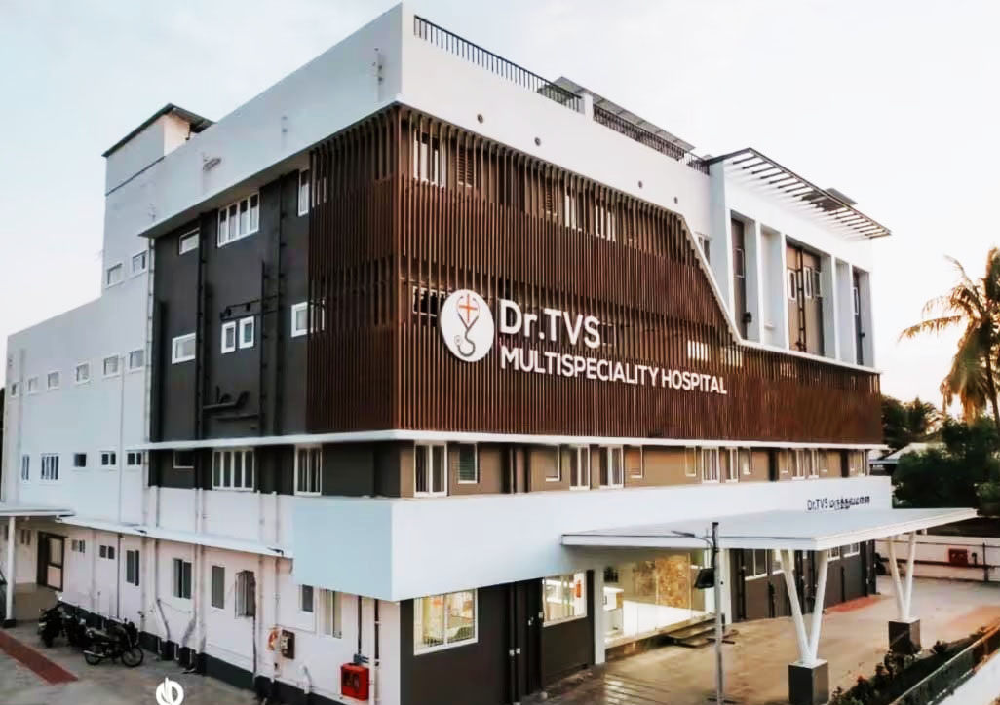
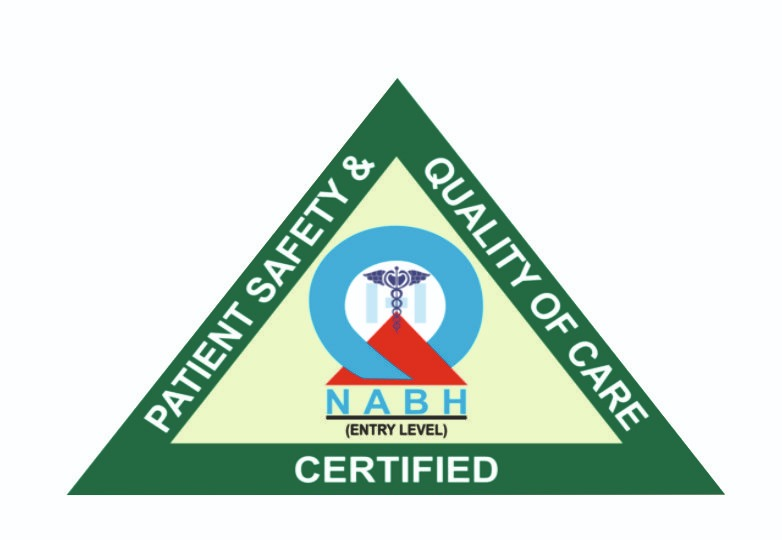

who we are
Dr. TVS Multispeciality Hospital is a 50-bedded, state-of-the-art healthcare destination in the heart of Thanjavur, just 2.6 km from the railway station and 3.5 km from the old bus stand. Strategically located at the entry point of Thanjavur, the hospital is easily accessible from Nagapattinam, Thiruvarur, Kumbakonam, Mayiladuthurai, Pattukottai, Pudukottai, and Trichy — making it a vital healthcare hub for the entire Delta region.
We combine compassionate care with advanced facilities and a strong specialist team to deliver world-class healthcare for our community.
“Our vision is to make world-class healthcare affordable and accessible to every individual, while our mission is to stand as the region’s trusted center for life-saving emergency and trauma care — 24/7, with compassion and excellence.”
our medical team
- Pediatric & General Laparoscopic Surgeon
- Neurosurgeon (24×7 in-house coverage)
- Gynecologist & Obstetrician
- ENT Surgeon
- Orthopedic Surgeon
- Physicians & Emergency Care Doctors
- 24-hour Intensive Care Specialists
- Urologist & Pediatrician
infrastructure & facilities
- 8-feet wide passages and spacious rooms (Standard, Deluxe, VIP)
- Rooms with LED TV, patient cots, attendant couches, separate bathrooms
- Deluxe rooms are air-conditioned; VIP rooms include a kitchenette
- 8-feet wide ramp & stretcher lift for transfers
- 24-feet wide driveway, parking for 30 cars
- Power backup: 200 kVA & 35 kVA DGs, 150 kVA stabilizer, UPS
- Central oxygen, nitrous oxide & vacuum
- Two laminar flow operating suites + emergency OT
- 6-bedded NICU separate from ICU
- Dedicated dialysis unit with HIV/HCV isolation
- HIS (HIPAA compliant) & CCTV coverage
advanced technology & diagnostics
- 15-bedded ICU with ventilators & dialysis machines
- 6-bedded HDU with ventilator provision
- 24-hour casualty & modular OTs with HEPA filters
- Siemens High-Frequency C-arm, Karl Storz laparoscopy
- Carl Zeiss operating microscope
- STRYKER CUSA, KLS Martin vessel sealer
- STRYKER HD arthroscopy & shaver system
- 32-slice GE CT scanner, GE Ultrasound with Doppler
- 24-hour Clinical Lab with ECG, EMG, EEG
- Digital X-ray & OPG
our specialties
- General & Advanced Laparoscopic Surgery
- Pediatric Surgery & Pediatric Urology
- Neurosurgery (24×7 in-house coverage)
- Orthopedics: trauma, joint replacement, spine & arthroscopy
- Obstetrics & Gynecology: antenatal care, fetal monitoring, laparoscopic hysterectomy
- Infertility & Assisted Reproduction
- ENT services with advanced surgery
- Dentistry: prosthodontics & implant dentistry
- Urology services; renal transplant approval in pipeline
- Physiotherapy: TENS, IFT, ultrasound therapy, kinetic therapy
our hospital

why choose us
Experienced Doctors
Multispeciality team with expertise across Pediatrics, ENT, OBG, Fertility, Orthopedics, Neurosurgery, Medicine, Dentistry, and Physiotherapy.
Advanced Technology
From laminar flow OTs and 32-slice CT to Karl Storz laparoscopy and STRYKER CUSA, we invest in outcomes-driven technology.
Comprehensive Care
Diagnostics, ICU/HDU, NICU, dialysis, and surgeries under one roof.
Patient Comfort
Comfortable rooms, wide passages, ramp & stretcher lift, and attentive nursing care.
Quality & Safety
Entry-level NABH certified; HIS & CCTV enabled; working towards Level-2 accreditation.
Convenient Location
Strategically located at the entry point of Thanjavur
commitment to quality
We are proud to be Entry-Level NABH certified for quality and patient safety, and are working towards Level-2 accreditation.
Our goal is to provide world-class outcomes with compassion and integrity.
